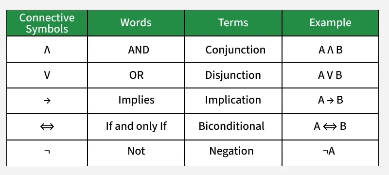

Welcome to the UW-Madison CS Advising Website!
This website is for CS majors at UW-Madison to help them find the best courses for them to take, and to learn more about the CS major. Look through the pages for useful information about this major, its requirements, and suggestions for what courses you want to take!
Fun gallery of things for you to play with and look at:
Approximate Major Progress Tracker
This little tool tells you how far along you are in your major. Enter your credit count, and it will tell you what % you are done with your major by credit count. It will also tell you when you are likely to graduate!
Graphics Code
Here's some sample code from the heart graphics. All this only JUST draws the heart. Imagine the code it takes to animate it like this!
function drawHeart() {
ctx.save();
ctx.translate(canvas.width / 2, canvas.height / 2 + Math.sin(cycle) * 5);
// Body
ctx.fillStyle = "#e73535";
ctx.beginPath();
ctx.arc(-50, -20, 50, -Math.PI, 0);
ctx.fill();
ctx.beginPath();
ctx.arc(50, -20, 50, -Math.PI, 0);
ctx.fill();
ctx.beginPath();
ctx.moveTo(100, -20);
ctx.bezierCurveTo(100, 20, 50, 80, 0, 100);
ctx.lineTo(0, -20);
ctx.fill();
ctx.beginPath();
ctx.moveTo(-100, -20);
ctx.bezierCurveTo(-100, 20, -50, 80, 0, 100);
ctx.lineTo(0, -20);
ctx.fill();
// Left eye
ctx.beginPath();
ctx.fillStyle = "#000000";
ctx.arc(-40, 0, 10, 0, Math.PI * 2);
ctx.fill();
ctx.beginPath();
ctx.fillStyle = "#ffffff";
ctx.arc(-43, -5, 3, 0, Math.PI * 2);
ctx.fill();
// Right eye
ctx.beginPath();
ctx.fillStyle = "#000000";
ctx.arc(40, 0, 10, 0, Math.PI * 2);
ctx.fill();
ctx.beginPath();
ctx.fillStyle = "#ffffff";
ctx.arc(37, -5, 3, 0, Math.PI * 2);
ctx.fill();
// Smile
ctx.beginPath();
ctx.fillStyle = "#000000";
ctx.arc(0, 40, 15, 0, Math.PI);
ctx.fill();
ctx.restore();
}
Graphics Demo
I learned to build this cool graphics demo in my CS559 Computer Graphics course. Isn't that cool? There's so many things to learn in CS at UW-Madison, try branching out sometime!
CS240 Discrete Math Example
These are some basic examples of discrete math symbols. Get used to them: you'll have to take discrete math at some point if you're majoring in CS!

CS252 ECE Example
This is one of the first projects you'll be doing in your MANDATORY CS/ECE 252 class. As you can see, its quite different than most traditional coding you'll do in your other courses. You'll learn how computers read the code that you write all the time!